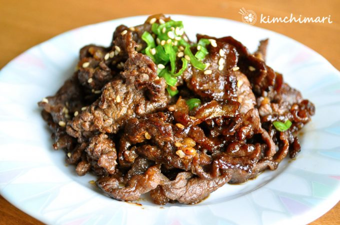

Bulgogi

Description
Authentic Korean dish made from marinated, thinly sliced steak and grilled over an open flame. Flavors of sweet ,salty and garlicky soy sauce wit ha hint of sesame oil served with your favorite Ban Chan
Ingredients
- 1 lb thinly sliced sirloin
Marinade
- 3 Tbsp soy sauce
- 2 Tbsp light brown sugar
- 1 Tbsp honey
- 1 Tbsp sesame oil
- 2 Tbsp minced garlic
- 1 tsp ground black pepper
- 2 tsp toasted sesame seeds
- 1 Tbsp chopped green onion
- 2 Tbsp pear, puree
Steps
- Make sauce by mixing all of the marinade ingredients together except for any optional vegetables such as onions or mushrooms.
- Mix in the bulgogi beef into the sauce prepared above – in a bowl big enough to hold the beef. Make sure the sauce is well mixed with the beef. You will need to use your hands here and just massage everything together.
- Heat up your favorite frying pan on high heat and just pan fry/stir fry the meat until it’s slightly brown on both sides.
Return to Main Page